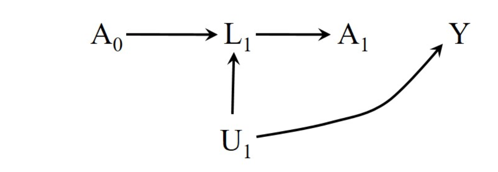
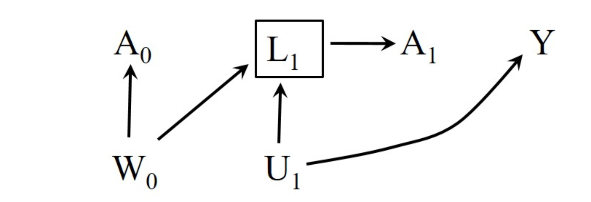
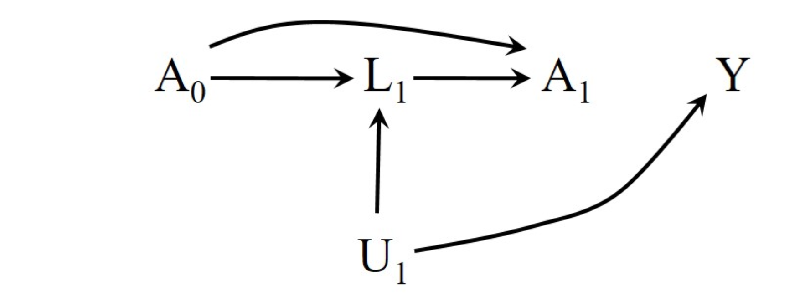

20.1. The elements of treatment-confounder feedback
1. Introduction: 순차적 교환가능성만으로는 충분하지 않다
- 이전 챕터(Chapter 19)에서 우리는 시변 치료(Time-varying treatment)의 인과 효과를 식별하기 위한 핵심 조건으로 순차적 교환가능성(Sequential Exchangeability)을 배웠습니다. 즉, 각 시점 \(k\)에서의 치료 \(A_k\)가 과거의 치료 및 공변량 이력을 조건부로 했을 때, 잠재적 결과(Potential Outcomes)와 독립적이라면 인과 효과를 식별할 수 있다는 것이었습니다.
\[ Y^{g} \perp A_k \mid \bar{A}_{k-1}, \bar{L}_k \]
하지만, 가장 강력한 형태의 순차적 교환가능성이 성립한다고 해도, 우리가 흔히 사용하는 전통적인 조정 방법(Traditional Adjustment Methods)—층화(Stratification), 회귀분석(Regression), 매칭(Matching)—은 편향된 추정치를 낳을 수 있습니다.
그 원흉이 바로 이번 포스트에서 다룰 Treatment-Confounder Feedback(치료-교란요인 피드백)입니다. 이 챕터에서는 피드백의 구조적 정의와 이것이 왜 전통적인 방법론을 무력화시키는지에 대한 구조적 배경을 설명합니다.
2. Treatment-Confounder Feedback의 요소
2.1. 피드백이 존재하는 경우 (The Feedback Loop)
- HIV 환자를 대상으로 한 가상의 순차적 무작위 실험(Sequentially Randomized Trial)을 생각해 봅시다.
- \(k\): 팔로우업 월(month), \(k=0, 1, \dots, K\)
- \(A_k\): \(k\) 시점의 치료 여부 (1: 치료, 0: 미치료)
- \(L_k\): \(k\) 시점의 CD4 세포 수 (건강 상태를 나타내는 지표이자 교란요인)
- \(Y\): \(K+1\) 시점의 건강 상태 (Outcome)
- 아래 그림(Figure 20.1)은 초기 두 달(\(k=0, 1\)) 동안의 변수 관계를 나타내는 DAG(Directed Acyclic Graph)입니다.
 > Figure 20.1 해석: > * \(L_k \to A_k\): CD4 수치가 낮으면 의사가 치료를 처방할 확률이 높아집니다. (\(L_k\)는 \(A_k\)의 교란요인) > * \(A_{k-1} \to L_k\): 이전 시점의 치료는 미래의 CD4 수치를 높입니다. (치료가 교란요인에 영향을 줌) > * 이 구조에서는 교란요인이 치료에 영향을 주고, 다시 치료가 교란요인에 영향을 주는 피드백이 형성됩니다.
> Figure 20.1 해석: > * \(L_k \to A_k\): CD4 수치가 낮으면 의사가 치료를 처방할 확률이 높아집니다. (\(L_k\)는 \(A_k\)의 교란요인) > * \(A_{k-1} \to L_k\): 이전 시점의 치료는 미래의 CD4 수치를 높입니다. (치료가 교란요인에 영향을 줌) > * 이 구조에서는 교란요인이 치료에 영향을 주고, 다시 치료가 교란요인에 영향을 주는 피드백이 형성됩니다.
- 이것이 바로 Treatment-Confounder Feedback입니다.
2.2. 피드백이 없는 경우와 비교
- 비교를 위해 피드백이 없는 상황(Figure 20.2)을 살펴봅시다.
 > Figure 20.2 해석: > * 여전히 \(L_k\)는 \(A_k\)와 \(Y\)에 영향을 미치므로 시변 교란요인(Time-varying Confounder)입니다. > * 하지만 \(A_{k-1} \to L_k\) 화살표가 제거되었습니다. 즉, 이전 치료가 미래의 교란요인 상태를 변화시키지 않습니다. > * 이 경우 시변 교란(Time-varying confounding)은 존재하지만, 치료-교란요인 피드백은 없습니다.
> Figure 20.2 해석: > * 여전히 \(L_k\)는 \(A_k\)와 \(Y\)에 영향을 미치므로 시변 교란요인(Time-varying Confounder)입니다. > * 하지만 \(A_{k-1} \to L_k\) 화살표가 제거되었습니다. 즉, 이전 치료가 미래의 교란요인 상태를 변화시키지 않습니다. > * 이 경우 시변 교란(Time-varying confounding)은 존재하지만, 치료-교란요인 피드백은 없습니다.
- 핵심: 전통적인 조정 방법이 실패하는 지점은 단순히 ’교란요인이 시간이 흐름에 따라 변해서’가 아니라, ‘과거의 치료가 미래의 교란요인에 영향을 미치기 때문’입니다.
3. Fine Point 20.1: 순환(Cycle)을 비순환 그래프(DAG)로 표현하기
“피드백 루프(Feedback Loop)”라는 용어는 마치 \(A\)와 \(L\)이 서로를 꼬리에 꼬리를 물고 순환하는 것처럼 들립니다. 하지만 인과추론에서 사용하는 그래프는 비순환(Acyclic) 그래프여야 합니다. 어떻게 순환을 비순환 그래프에 담을 수 있을까요?
Hernán & Robins는 이를 시간의 이산화(Discretization of Time)를 통해 해결합니다.
- 시간 전개 (Unrolling over time):
- \(A\)와 \(L\)이 서로 영향을 주고받는 관계를 동시점의 상호작용으로 보지 않고, 시간차를 둡니다.
- \(A_{k-1} \to L_k \to A_k \to L_{k+1} \dots\)
- 이산 시간 (Discrete Time):
- 시간을 \([k, k+1)\) 구간으로 나눕니다.
- 이 구간의 길이는 데이터의 세밀함(granularity)에 따라 월(Month), 일(Day), 혹은 분(Minute) 단위가 될 수 있습니다.
- 구간 내에서 변화가 언제 일어나는지는 따지지 않고, \(k\) 시점의 상태가 \(k+1\) 시점에 영향을 준다고 가정함으로써 사이클(Cycle)을 제거하고 DAG를 유지합니다.
4. 문제의 단순화: The Null Scenario (Figure 20.3)
치료-교란요인 피드백이 왜 전통적인 방법론(예: 회귀분석)을 망가뜨리는지 이해하기 위해, 문제를 가장 단순한 형태로 축소해 봅시다.
우리는 다음 4가지 가정을 통해 복잡한 DAG를 Figure 20.3으로 단순화합니다.
- Sharp Null Hypothesis (강한 귀무가설): 치료 \(A\)가 결과 \(Y\)에 아무런 인과적 효과가 없다. (즉, \(A \to Y\) 화살표 제거)
- 2시점 모델: \(k=0, 1\)만 고려. (Baseline \(L_0\) 및 \(U_0\) 생략)
- 치료 할당:
- \(A_0\): 무작위 할당 (Marginally randomized)
- \(A_1\): \(L_1\)에 따라 무작위 할당 (Conditionally randomized given \(L_1\))
- 피드백 존재: \(A_0 \to L_1\) (과거 치료가 현재 교란요인에 영향을 줌)
이러한 가정하에 그려진 DAG는 다음과 같습니다.
 > Figure 20.3 상세 설명: > * 경로: \(A_0 \to L_1 \to A_1\), \(L_1 \to Y\), \(U_1 \to L_1\), \(U_1 \to Y\). > * Null Hypothesis: \(A_0\)나 \(A_1\)에서 출발하여 \(Y\)로 향하는 화살표(직접 경로)가 전혀 없습니다. > * Target Effect: 우리가 추정하고자 하는 “항상 치료(\(1,1\))” vs “전혀 치료 안 함(\(0,0\))”의 효과는 0이어야 합니다. > * Randomization: 미측정 교란요인 \(U_1\)이 \(A_0, A_1\)으로 들어가는 화살표가 없으므로, 이는 순차적 무작위 실험(Sequentially Randomized Trial) 구조를 만족합니다.
논리적 함정 (The Trap)
이 구조는 순차적 무작위 실험입니다. 따라서 이론적으로 우리는 관측된 데이터(\(A_0, L_1, A_1, Y\))만으로 인과 효과를 0으로 올바르게 추정할 수 있어야 합니다.
하지만 여기서 딜레마가 발생합니다.
- \(A_1\)의 효과를 추정하려면 \(L_1\)이 \(A_1\)과 \(Y\)의 공통 원인(Confouder)이므로, \(L_1\)을 통제(Adjust)해야 합니다.
- 그러나 \(L_1\)은 \(A_0\)의 결과(Descendant)이자 \(A_0\)와 \(Y\) 사이의 경로(\(A_0 \to L_1 \to Y\))에 위치합니다.
- 전통적인 방법(예: \(L_1\)을 공변량으로 넣은 회귀분석)을 사용하여 \(L_1\)을 통제하는 순간, \(A_0\)에 대한 추정에 편향(Bias)이 발생하게 됩니다. (이 구체적인 편향의 메커니즘—Collider Stratification 등—은 20.2절에서 다루게 됩니다.)
결과적으로, 피드백이 존재하면 “필요한 교란요인(\(L_1\))을 통제하면 편향이 생기고, 통제하지 않아도(교란 때문에) 편향이 생기는” 진퇴양난에 빠지게 됩니다.
20.2 The bias of traditional methods
1. Introduction: The Limitation of Traditional Methods
인과추론(Causal Inference)을 공부하다 보면, 교란 요인(Confounder)을 통제하기 위해 회귀분석(Regression)이나 층화(Stratification)와 같은 전통적인 방법을 사용하는 것이 표준처럼 느껴질 때가 있습니다.
하지만 Miguel A. Hernán과 James M. Robins의 저서 Causal Inference: What If의 Chapter 20.2는 이러한 전통적인 방법이 무력해지는 결정적인 순간을 다룹니다. 바로 Time-varying Confounders (시간에 따라 변하는 교란 요인)가 이전 시점의 치료(Prior Treatment)에 의해 영향을 받는 경우, 즉 Treatment-Confounder Feedback이 존재하는 상황입니다.
이 포스트에서는 가상의 HIV 임상시험 데이터를 통해, 전통적인 층화 분석이 왜 편향(Bias)을 일으킬 수밖에 없는지, 그리고 직관적으로 ’0’이어야 할 인과 효과가 왜곡되어 계산되는 과정을 수식과 함께 상세히 분석해 보겠습니다.
2. The Setup: A Sequentially Randomized Trial
- 전통적인 방법의 편향을 증명하기 위해, 모든 조건이 완벽하게 통제된 가상의 순차적 무작위 실험(Sequentially Randomized Trial)을 설정해 보겠습니다.
2.1 Study Design
- 대상: HIV 감염자 32,000명
- 시점: \(k=0\) (Baseline)과 \(k=1\) (Month 1) 두 시점.
- 변수 정의:
- \(A_k\): 시점 \(k\)에서의 치료 여부 (\(1\): 치료, \(0\): 미치료).
- \(L_1\): 시점 1 시작 시점의 CD4 세포 수 (\(0\): High/건강함, \(1\): Low/나쁨).
- \(Y\): 추적 관찰 종료 시점의 건강 상태 (값이 클수록 건강함).
- 할당 메커니즘 (Assignment Mechanism):
- \(A_0\) (Baseline Treatment): 0.5의 확률로 무작위 배정.
- \(A_1\) (Month 1 Treatment): \(L_1\) 값에 따라 다른 확률로 무작위 배정.
- \(P(A_1=1 | L_1=0) = 0.4\)
- \(P(A_1=1 | L_1=1) = 0.8\)
- 이 실험은 순차적 교환성(Sequential Exchangeability)을 만족하도록 설계되었습니다. 즉, 측정된 과거 정보(\(A_0, L_1\))를 조건부로 할 때, 치료 배정은 잠재적 결과(Counterfactual Outcomes)와 독립입니다.
2.2 Causal Structure
- 이 연구의 인과 구조는 다음과 같이 도식화할 수 있습니다.
- 여기서 핵심은 Treatment-Confounder Feedback입니다. \(A_0\)가 \(L_1\)에 영향을 주고, \(L_1\)이 다시 \(A_1\)의 교란 요인이 되는 구조입니다.
3. Data Analysis: The “True” Null Effect
- 먼저, 이 데이터가 실제로 인과 효과가 없음(Null Effect)을 나타내는지 확인해야 합니다. 책에서 제공된 데이터(Table 20.1)를 재구성하면 다음과 같습니다.
3.1 Observed Data Table
| \(N\) | \(A_0\) | \(L_1\) | \(A_1\) | Mean \(Y\) |
|---|---|---|---|---|
| 2400 | 0 | 0 | 0 | 84 |
| 1600 | 0 | 0 | 1 | 84 |
| 2400 | 0 | 1 | 0 | 52 |
| 9600 | 0 | 1 | 1 | 52 |
| 4800 | 1 | 0 | 0 | 76 |
| 3200 | 1 | 0 | 1 | 76 |
| 1600 | 1 | 1 | 0 | 44 |
| 6400 | 1 | 1 | 1 | 44 |
3.2 Verification of Null Effects
- 우리는 이 데이터에서 두 가지 사실을 확인할 수 있습니다.
1) \(A_1\)의 효과는 0이다.
- 과거 변수(\(A_0, L_1\))가 고정된 상태에서 \(A_1\)의 변화에 따른 \(Y\)의 평균 차이를 봅니다. \[E[Y|A_0=0, L_1=0, A_1=1] - E[Y|A_0=0, L_1=0, A_1=0] = 84 - 84 = 0\]
- 나머지 3개의 층(\(A_0, L_1\) 조합)에서도 모두 차이가 0임을 표에서 바로 확인할 수 있습니다.
2) \(A_0\)의 효과는 0이다.
- \(A_0\)에 따른 평균 \(Y\)값을 계산해 봅니다. (가중 평균 사용)
- \(A_0=0\) 그룹의 평균: \[E[Y|A_0=0] = \frac{2400(84)+1600(84)+2400(52)+9600(52)}{16000} = 60\]
- \(A_0=1\) 그룹의 평균: \[E[Y|A_0=1] = \frac{4800(76)+3200(76)+1600(44)+6400(44)}{16000} = 60\]
- 차이: \(60 - 60 = 0\).
Technical Note: The G-Null Theorem Robins(1986)의 G-Null Theorem에 따르면, 순차적 무작위 배정 하에서 각 단계의 치료 효과가 0이라면(conditional independencies), 어떤 동적 치료 전략(dynamic strategy)을 비교하더라도 그 인과 효과(Global Null)는 0이어야 합니다.
즉, 우리는 “Always Treat (\(A_0=1, A_1=1\))” 전략과 “Never Treat (\(A_0=0, A_1=0\))” 전략을 비교했을 때, 그 차이가 0이 나올 것을 기대합니다.
4. The Failure of Traditional Methods
이제 문제가 되는 부분입니다. 우리가 기대하는 정답은 0입니다. 하지만 전통적인 분석 방법들이 이 값을 찾아낼 수 있을까요?
우리는 두 가지 전략을 비교합니다:
- Always Treat: \((A_0=1, A_1=1)\)
- Never Treat: \((A_0=0, A_1=0)\)
Analysis 1: Unadjusted Analysis (Ignoring \(L_1\))
교란 요인 \(L_1\)을 무시하고 단순히 두 그룹의 평균을 비교해 봅니다.
Always Treat (\(A_0=1, A_1=1\)): Table 20.1의 Row 6과 8을 합칩니다. \[ E[Y|A_0=1, A_1=1] = \frac{3200 \times 76 + 6400 \times 44}{3200 + 6400} = \frac{243200 + 281600}{9600} = 54.7 \]
Never Treat (\(A_0=0, A_1=0\)): Table 20.1의 Row 1과 3을 합칩니다. \[ E[Y|A_0=0, A_1=0] = \frac{2400 \times 84 + 2400 \times 52}{2400 + 2400} = \frac{201600 + 124800}{4800} = 68.0 \]
Estimated Effect: \[54.7 - 68.0 = -13.3\]
결과: 인과 효과가 -13.3으로 계산됩니다. 이는 “치료를 전혀 안 받는 것이 다 받는 것보다 훨씬 낫다”는 잘못된 결론입니다. 물론, \(L_1\)이 \(A_1\)의 교란 요인이므로 보정하지 않았기에 이 결과가 틀렸다는 것은 직관적으로 알 수 있습니다.
Analysis 2: Stratification (Adjusting for \(L_1\))
그렇다면, 전통적인 방식대로 교란 요인 \(L_1\)으로 층화(Stratification)하여 분석하면 해결될까요?
\(L_1\)의 수준(0과 1)에 따라 나누어, Always Treat과 Never Treat의 차이를 계산해 봅시다.
Stratum \(L_1 = 0\) (High CD4)
- Always Treat (\(A_0=1, L_1=0, A_1=1\)): Row 6 \(\rightarrow\) Mean \(Y = 76\)
- Never Treat (\(A_0=0, L_1=0, A_1=0\)): Row 1 \(\rightarrow\) Mean \(Y = 84\)
- Difference: \(76 - 84 = -8\)
Stratum \(L_1 = 1\) (Low CD4)
Always Treat (\(A_0=1, L_1=1, A_1=1\)): Row 8 \(\rightarrow\) Mean \(Y = 44\)
Never Treat (\(A_0=0, L_1=1, A_1=0\)): Row 3 \(\rightarrow\) Mean \(Y = 52\)
Difference: \(44 - 52 = -8\)
결과: \(L_1\)의 모든 층에서 효과가 -8로 나타납니다. 가중 평균을 구하더라도 결과는 -8이 될 것입니다.
충격적인 결론: 교란 요인을 보정했음에도 불구하고, 우리는 여전히 참값인 0을 얻지 못했습니다. 왜 전통적인 층화 분석은 실패했을까요?
5. Why Traditional Methods Fail: Collider Bias
- 이 역설의 원인은 인과 다이어그램(DAG)을 통해 명확히 이해할 수 있습니다.
5.2 The Mechanism of Bias
- 경로 개방: \(L_1\)에 대해 층화(Stratification)하면, \(A_0\)와 \(U_1\) 사이에 비인과적 상관관계(Association)가 형성됩니다.
- 해석: 예를 들어, \(L_1=1\)(나쁜 상태)인 층을 봅시다.
- 치료를 받았음에도(\(A_0=1\)) 상태가 나빠졌다(\(L_1=1\))면, 이는 기저 건강 상태(\(U_1\))가 매우 안 좋았음을 의미할 가능성이 높습니다.
- 반면, 치료를 안 받았는데(\(A_0=0\)) 상태가 나쁜(\(L_1=1\)) 것은 자연스러운 일일 수 있습니다.
- 따라서 \(L_1\)을 고정하면, \(A_0=1\)인 그룹이 \(A_0=0\)인 그룹보다 \(U_1\)이 더 나쁜 사람들로 구성되게 됩니다(Selection Bias).
- 결과 왜곡: 이 \(U_1\)의 차이가 \(Y\)에 영향을 미치게 되어, \(A_0\)가 \(Y\)에 미치는 순수한 효과가 왜곡됩니다.
Summary of Failure
- 전통적인 방법(회귀분석, 층화)은 Treatment-Confounder Feedback이 있을 때 딜레마에 빠집니다.
- \(L_1\)을 보정하지 않으면: \(A_1\)에 대한 교란(Confounding) 때문에 편향 발생.
- \(L_1\)을 보정하면: \(A_0\)에 대한 충돌 편향(Collider Bias) 때문에 편향 발생.
- 이러한 상황에서는 G-methods (Inverse Probability Weighting, G-computation, G-estimation)만이 올바른 인과 효과를 추정할 수 있습니다.
20.3 Why traditional methods fail
1. Introduction: The Paradox of Time-Varying Treatments
인과추론(Causal Inference)에서 교란(Confounding)을 통제하는 것은 가장 핵심적인 과제입니다. 우리는 일반적으로 층화(Stratification)나 회귀분석(Regression)을 통해 교란 요인 \(L\)을 통제하면, 치료 \(A\)가 결과 \(Y\)에 미치는 인과적 효과를 편향 없이 추정할 수 있다고 배웁니다.
하지만 치료가 한 시점이 아니라 여러 시점에 걸쳐 이루어지는 시변 치료(Time-varying Treatment) 상황에서는 이야기가 달라집니다. 특히, 과거의 치료가 미래의 교란 요인에 영향을 미치는 ‘Treatment-confounder feedback’ 구조가 존재할 경우, 전통적인 방법론(층화, 매칭, 회귀분석)은 구조적으로 실패할 수밖에 없습니다.
이번 포스트에서는 Hernán & Robins의 What If Chapter 20.3을 바탕으로, 왜 데이터가 충분하고 모든 식별 가정(Identifiability conditions)이 만족되더라도 전통적 방법이 편향된 결과를 낳는지 분석합니다.
2. Motivating Example: HIV Treatment Study
- 문제를 구체화하기 위해 HIV 환자를 대상으로 한 2시점 치료 연구를 가정해 봅시다.
2.1. Scenario Setup
- Time points (\(k=0, 1\)):
- \(A_0, A_1\): 각 시점의 치료 여부 (1: 치료, 0: 비치료)
- \(L_1\): 시점 1에서 측정된 시간 가변 교란 요인 (예: CD4 수치, 면역력 지표). \(L_1=1\)은 낮은 수치(나쁨), \(L_1=0\)은 높은 수치(좋음)를 의미.
- \(Y\): 최종 결과 (예: 바이러스 수치, 사망률 등).
- \(U_1\): 측정되지 않은 환자의 기저 건강 상태 (Unmeasured variable, 면역 억제 레벨).
- True Effect: 이 예제 데이터는 실제로 치료 효과가 0 (Null effect)이 되도록 생성되었습니다. 즉, 어떤 치료 전략을 쓰더라도 실제 \(Y\)값에는 변화가 없어야 합니다.
2.2. The Failure of Naive Estimation
- 데이터에서 관찰된 평균 결과값(\(E[Y|A]\))을 단순히 비교해보면 다음과 같습니다:
\[ \begin{aligned} E[Y|A_0=1, A_1=1] &= 54.7 \\ E[Y|A_0=0, A_1=0] &= 68.0 \end{aligned} \]
- 단순 차이는 \(54.7 - 68.0 = -13.3\)입니다. 실제 효과는 0이어야 하는데, 데이터는 “치료를 받지 않는 것이 훨씬 더 좋다”는 잘못된 결론을 제시하고 있습니다. 이는 \(L_1\)에 의한 교란이 조정되지 않았기 때문입니다.
2.3. The Failure of Stratification (Adjustment)
그렇다면 교란 요인 \(L_1\)을 통제(층화)하면 문제가 해결될까요? \(L_1\)의 레벨별로 나누어 효과를 계산해 봅니다.
Stratum \(L_1=0\): \[E[Y|A_0=1, L_1=0, A_1=1] - E[Y|A_0=0, L_1=0, A_1=0] = 76 - 84 = -8\]
Stratum \(L_1=1\): \[E[Y|A_0=1, L_1=1, A_1=1] - E[Y|A_0=0, L_1=1, A_1=0] = -8\]
놀랍게도, \(L_1\)을 통제했음에도 불구하고 여전히 -8이라는 편향된 추정치가 나옵니다. 우리는 참값이 0임을 알고 있습니다. 도대체 왜 교란 요인을 통제했는데도 편향이 사라지지 않았을까요?.
3. Structural Analysis: Why Stratification Fails
- 이 현상의 원인을 이해하기 위해 인과 다이어그램(Causal DAG)을 살펴봐야 합니다.
3.1. Treatment-Confounder Feedback Structure
- 문제의 핵심 구조는 다음과 같습니다.

Figure 해석: * \(A_0 \rightarrow L_1\): 초기 치료(\(A_0\))가 환자의 중간 상태(\(L_1\))에 영향을 줍니다. * \(L_1 \rightarrow A_1\): 중간 상태(\(L_1\))는 의사가 다음 치료(\(A_1\))를 결정하는 근거가 됩니다 (교란 요인). * \(U_1 \rightarrow L_1\) & \(U_1 \rightarrow Y\): 측정되지 않은 기저 건강 상태(\(U_1\))가 \(L_1\)과 결과 \(Y\) 모두에 영향을 줍니다.
3.2. Collider Stratification Bias
전통적인 층화 분석(Stratification)은 \(L_1\)을 조건부로 둡니다(Conditioning on \(L_1\)). 여기서 \(L_1\)은 Collider(충돌수) 역할을 하게 됩니다.
- Confounding Control for \(A_1\): \(L_1\)은 \(A_1\)과 \(Y\)의 공통 원인이므로, \(A_1\)의 효과를 추정하기 위해서는 \(L_1\)을 통제해야 합니다.
- Selection Bias for \(A_0\): 하지만 \(L_1\)은 \(A_0\)의 결과이기도 합니다 (\(A_0 \rightarrow L_1\)). 동시에 \(U_1 \rightarrow L_1\) 경로가 존재합니다.
- The Opened Path: \(L_1\)을 조건부로 두는 순간(Conditioning on collider), \(A_0\)와 \(U_1\) 사이에 가상의 상관관계가 형성됩니다. 즉, \(A_0 \rightarrow \boxed{L_1} \leftarrow U_1 \rightarrow Y\) 경로가 열리게 됩니다.
\[A_0 \not\perp U_1 | L_1\]
3.3. Intuitive Explanation (직관적 해석)
- 수식 없이 직관적으로 설명하면 다음과 같습니다.
- CD4 수치가 낮은 그룹(\(L_1=1\))만 모아서 본다고 가정합시다.
- 이 그룹 안에 치료를 받은 사람(\(A_0=1\))이 있다면, 치료를 받았음에도 불구하고 CD4 수치가 낮아졌다는 뜻이므로, 이 사람은 기저 건강 상태(\(U_1\))가 매우 나쁜 사람일 가능성이 높습니다 (Severe immunosuppression).
- 반면, 이 그룹 안에 치료를 안 받은 사람(\(A_0=0\))이 있다면, 치료를 안 해서 CD4가 낮아진 것이므로, 기저 건강 상태(\(U_1\))는 상대적으로 덜 나쁠 수 있습니다.
- 즉, \(L_1\)을 고정하는 순간, 치료군(\(A_0=1\))은 비치료군(\(A_0=0\))보다 본질적으로 더 아픈 사람들(\(U_1\)이 높은 사람들)로 구성되게 됩니다.
- 결과적으로 치료가 효과가 없더라도, 치료군이 더 많이 사망하거나 상태가 악화되는 것처럼 보이게 됩니다.
- 이것이 바로 선택 편향(Selection Bias)입니다. \(A_1\)에 대한 교란을 제거하려고 \(L_1\)을 통제했더니, \(A_0\)에 대한 선택 편향이 발생해버린 딜레마입니다.
4. Fine Points & Extensions
4.1. Confounder on the Causal Pathway?
- 흔히 “중재자(Mediator)를 통제하면 안 된다”라고 배웁니다. 하지만 여기서 \(L_1\)은 단순한 중재자가 아니라 \(A_1\)의 교란 요인입니다.

- 위 그림(Figure 20.7)처럼 \(A_0 \rightarrow L_1 \rightarrow Y\) 경로가 실제로 존재한다고 합시다.
- 이 경우 \(L_1\)을 통제하면 \(A_0\)의 효과 중 \(L_1\)을 통한 간접 효과가 제거되는 문제가 발생합니다.
- 하지만 더 심각한 문제는, 앞서 설명한 대로 \(L_1\)이 \(U_1\)과 연결되어 있다면(\(U_1 \rightarrow L_1\)), \(L_1\) 통제 시 Collider Bias가 발생하여 인과 효과 추정 자체가 불가능해진다는 점입니다.
4.2. Observational Equivalence
- 이 문제는 \(U_1\)(측정되지 않은 변수)이 \(L_1\)에만 영향을 주는 경우(Figure 20.5)뿐만 아니라, \(A_0\)와 \(L_1\)의 공통 원인 \(W_0\)가 존재할 때(Figure 20.6)도 동일하게 발생합니다.

- 관찰 연구(Observational Study)에서는 이 두 구조를 데이터만으로 구별할 수 없으며, 두 경우 모두 전통적인 층화 분석은 실패합니다.
5. Why Regression Cannot Fix This
- 혹자는 “단순 층화(Stratification)가 문제라면, 더 정교한 회귀분석(Regression) 모델을 쓰면 되지 않을까?”라고 생각할 수 있습니다.
5.1. The Limitation of Regression
하지만 회귀분석 역시 본질적으로는 조건부 기댓값(Conditional Expectation)을 추정하는 방법론, 즉 모수적 층화(Parametric Stratification)일 뿐입니다.
예를 들어, 다음과 같은 회귀식을 세운다고 가정해 봅시다.
\[E[Y|\bar{A}, L_1] = \theta_0 + \theta_1 \text{cum}(\bar{A}) + \theta_2 L_1\]
- 여기서 \(\text{cum}(\bar{A}) = A_0 + A_1\)입니다. 이 식 역시 \(L_1\)을 회귀식에 포함(Adjust)하고 있습니다. 앞서 보았듯이 \(L_1\)을 조건부로 넣는 순간 Collider Bias가 발생하므로, 회귀 계수 \(\theta_1\)은 편향될 수밖에 없습니다.
5.2. The Curse of Dimensionality
- 게다가 시점이 \(K=100\)처럼 늘어나면 가능한 치료 전략의 수는 \(2^{100}\)개가 되어, 비모수적 층화는 데이터 부족으로 불가능해집니다. 회귀분석은 모델링을 통해 이 차원의 저주를 해결하려 하지만, Treatment-confounder feedback으로 인한 구조적 편향은 모델링으로 해결할 수 있는 문제가 아닙니다.
20.4 Why traditional methods cannot be fixed
1. Introduction
인과추론(Causal Inference)을 공부하다 보면, 단일 시점의 처치(Point Exposure)를 넘어 시간에 따라 변하는 처치(Time-varying Treatment)를 다루게 됩니다. 이때 우리는 흔히 “교란 요인(Confounder)이 많으면 다변량 회귀분석(Multivariate Regression)을 돌려서 통제하면 되지 않을까?”라고 생각하기 쉽습니다.
하지만 Hernán & Robins의 What If Chapter 20.4는 충격적인 사실을 전달합니다. Time-varying Confounder가 이전 시점의 처치에 영향을 받는 경우(Treatment-Confounder Feedback), 전통적인 회귀분석이나 층화(Stratification) 분석은 편향(Bias)을 제거할 수 없을 뿐만 아니라, 오히려 편향을 유발할 수 있다는 것입니다.
이번 포스트에서는 왜 고전적인 방법론들이 이러한 구조적 상황에서 실패할 수밖에 없는지, 그 수리적, 논리적 이유를 정리합니다.
2. The Curse of Dimensionality in Stratification
- 가장 먼저 고려할 수 있는 직관적인 방법은 비모수적 층화(Nonparametric Stratification)입니다. 즉, 교란 요인 \(L\)의 모든 조합에 대해 데이터를 나누어 분석하는 것입니다. 하지만 Time-varying setting에서는 이 방법이 사실상 불가능합니다.
2.1. 데이터 희소성 문제
- 처치 \(A_k\)가 \(k=0, 1, ..., K\) 시점에 걸쳐 발생한다고 가정해 봅시다.
- 만약 \(K=100\) (예: 100일 동안 매일 약물 복용 여부 기록)이라면, 가능한 정적 처치 전략(Static Treatment Strategy, \(\bar{a}\))의 수는 다음과 같습니다.
\[ 2^{100} \]
- 이는 천문학적인 숫자로, 지구상의 어떤 연구 샘플 크기보다도 큽니다. 여기에 \(L_k\) (Time-varying Confounder)까지 고려하면, 층화 분석을 위해 필요한 데이터의 셀(cell) 개수는 폭발적으로 증가합니다. 따라서, 단순 층화 분석은 고차원 데이터(High-dimensional data) 환경에서 실행 불가능합니다.
3. Why Regression Cannot Fix the Problem
- 데이터 희소성 문제를 해결하기 위해 우리는 통계적 모델링, 즉 회귀분석(Parametric Outcome Regression)을 대안으로 떠올립니다. 모델을 통해 데이터를 평활화(smoothing)하고 차원을 축소하여 추정하려는 시도입니다.
3.1. Dose-Response Function 가정
모델링을 위해서는 처치 이력 \(\bar{a}\)가 결과 \(Y\)에 미치는 영향에 대한 함수적 형태를 가정해야 합니다. 예를 들어, 처치 전략의 효과가 누적 처치량(Cumulative Treatment)에 비례하여 선형적으로 증가한다고 가정해 봅시다.
하지만 모델링은 “모델 오설정(Misspecification)”이라는 위험을 동반합니다. 더 심각한 문제는, 설령 모델이 완벽하게 설정되었다 하더라도, 회귀분석은 구조적으로 편향을 제거할 수 없다는 점입니다.
3.2. Regression is essentially Stratification
- 회귀분석은 본질적으로 “공변량 \(L\)을 고정(Conditioning)한 상태에서 처치 \(A\)와 결과 \(Y\)의 관계를 보는 것”입니다. 즉, 방법론적으로 층화 분석의 연장선에 있습니다. 따라서 층화 분석이 실패하는 구조적 원인(Treatment-Confounder Feedback)이 존재한다면, 회귀분석 또한 실패하게 됩니다.
4. Structural Failure: Treatment-Confounder Feedback
- 이 문제의 핵심인 Treatment-Confounder Feedback 상황을 구체적인 DAG(Directed Acyclic Graph)와 수식을 통해 살펴보겠습니다.
4.1. The Setup
- 다음과 같은 인과 구조를 가정합니다:
- \(A_0, A_1\): 시점 0과 1에서의 처치 (이진 변수)
- \(L_1\): 시점 1에서의 교란 요인 (이진 변수)
- \(Y\): 결과 변수
- \(U_1\): \(L_1\)과 \(Y\)에 영향을 미치는 측정되지 않은 교란 요인 (Unmeasured Confounder)

- 위 그림에서 중요한 점은 \(A_0 \rightarrow L_1 \rightarrow A_1\)의 흐름입니다. 즉, 과거의 처치가 미래의 교란 요인에 영향을 줍니다.
4.2. Mathematical Formulation
- 우리는 누적 처치(Cumulative Treatment) 변수, \(\text{cum}(\bar{A})\)를 다음과 같이 정의합니다.
\[ \text{cum}(\bar{A}) = A_0 + A_1 \]
- 이 변수는 0(둘 다 미처치), 1(한 번만 처치), 2(둘 다 처치)의 값을 가질 수 있습니다. 우리의 목표는 “항상 처치(\(\text{cum}=2\))”와 “전혀 처치 안 함(\(\text{cum}=0\))” 간의 인과적 효과를 추정하는 것입니다.
\[ \text{Causal Effect} = E[Y^{\text{cum}(\bar{a})=2}] - E[Y^{\text{cum}(\bar{a})=0}] \]
4.3. The Regression Model
- 가령 \(E[Y|\bar{A}, L_1]\)가 공변량 \(\text{cum}(\bar{A})\)에 대해 선형이라고 가정하고, 다음 회귀 모델을 적합한다고 합시다.
\[ E[Y|\bar{A}, L_1] = \theta_0 + \theta_1 \text{cum}(\bar{A}) + \theta_2 L_1 \]
- 여기서 \(\theta_1\)은 \(L_1\)을 통제(Conditioning)했을 때 누적 처치의 효과를 나타냅니다. 만약 인과 효과가 0이라면, 올바른 방법론은 0을 추정해야 합니다.
4.4. The Bias Mechanism (Why \(\theta_1 \neq\) Causal Effect)
- 문제는 \(L_1\)을 통제하는 순간 발생합니다.
- Collider Bias의 발생: 위 DAG에서 \(L_1\)은 \(A_0\)의 자손(Descendant)이자 \(U_1\)의 자손입니다 (\(A_0 \rightarrow L_1 \leftarrow U_1\)).
- Back-door Path 개방: \(L_1\)을 조건부로 통제(Conditioning)하면, \(A_0\)와 \(U_1\) 사이에 상관관계가 형성됩니다 (Collider가 열림).
- Non-causal Path: 결과적으로 \(A_0 \rightarrow L_1 \leftarrow U_1 \rightarrow Y\) 라는 뒷문 경로(Back-door path)가 열리게 됩니다.
- Bias의 전파: \(\text{cum}(\bar{A})\)는 \(A_0\)를 포함하고 있으므로, \(\theta_1\)은 이 비인과적 연관성(Non-causal association)을 반영하게 됩니다.
- 결국, 진정한 인과 효과가 0이라 할지라도, 회귀분석 계수 \(\theta_1\)은 0이 아닌 값으로 추정됩니다. 이는 모델이 데이터를 잘못 적합해서가 아니라, \(L_1\)을 통제하는 것 자체가 구조적으로 편향을 유발하기 때문입니다.
Key Insight: “Regression adjusts for confounding by stratifying on covariates. But when covariates are affected by prior treatment (feedback), stratifying on them induces collider stratification bias.”
5. The Role of Past Treatment
- 조금 더 일반적인 상황을 고려해봅시다. 현실에서는 과거 처치(\(A_0\))가 현재 처치(\(A_1\))에 직접적인 영향을 미치는 경우가 많습니다 (예: 의사가 환자의 과거 처치 이력을 보고 현재 처방을 결정).

- 이 경우, \(A_1\)의 효과를 추정하기 위해서는 교란 요인인 \(A_0\)를 반드시 통제해야 합니다 (\(A_0 \rightarrow A_1\), \(A_0 \rightarrow ... \rightarrow Y\)). 이를 Sequential Exchangeability라고 하며, 시점 \(k\)에서의 교환 가능성은 과거의 모든 처치 및 공변량 이력에 조건부여야 함을 의미합니다.
\[ Y^{\bar{a}} \perp A_k \mid \bar{A}_{k-1}, \bar{L}_k \]
- 하지만 앞서 보았듯이, 이 조건부 확률을 계산하기 위해 단순히 \(L_k\)를 회귀식에 넣는 순간 Collider Bias가 발생합니다. 즉, 우리는 딜레마에 빠집니다.
- Confounding을 막기 위해 \(L_1\)을 통제해야 한다? \(\rightarrow\) \(L_1\)이 \(A_0\)의 결과이므로 Collider Bias 발생.
- Bias를 피하기 위해 \(L_1\)을 통제하지 않는다? \(\rightarrow\) \(L_1\)을 통한 Confounding 발생.
- 이것이 바로 전통적인 회귀분석이나 층화 분석이 Time-varying Treatment & Confounder Feedback 상황에서 실패할 수밖에 없는 이유입니다. 이를 해결하기 위해서는 G-methods (IP Weighting, G-formula, G-estimation)와 같은 새로운 방법론이 필요합니다.
20.5 Adjusting for past treatment
1. Introduction
인과추론, 특히 시점마다 치료 여부가 달라질 수 있는 Time-Varying Treatment 상황에서 가장 까다로운 문제 중 하나는 Treatment-Confounder Feedback입니다. 이는 과거의 치료가 미래의 공변량(Confounder)에 영향을 주고, 그 공변량이 다시 미래의 치료 결정에 영향을 주는 순환적 구조를 의미합니다.
이번 포스트에서는 Hernán & Robins의 What If 교재의 Section 20.5 Adjusting for past treatment를 중심으로, 왜 단순히 현재 시점의 공변량만 통제하는 것으로는 부족한지, 그리고 왜 반드시 과거 치료 이력(Past Treatment History)을 보정해야 하는지 인과 다이어그램(DAG)과 함께 수식으로 살펴보겠습니다.
2. The Problem: Conditioning on Covariates is Insufficient
- 일반적인 고정 시점(Time-fixed) 연구에서는 교란 요인 \(L\)을 통제하면 \(A\)와 \(Y\) 사이의 Backdoor path를 막을 수 있습니다. 하지만, 시간이 흐르며 치료가 반복되는 상황에서는 이야기가 달라집니다.
2.1. The Causal Structure (DAG)
의사들이 환자의 과거 치료 이력(\(\bar{A}_{k-1}\))을 참고하여 현재의 치료(\(A_k\))를 결정하는 상황을 가정해 봅시다[cite: 28]. 이를 인과 다이어그램(Causal Diagram)으로 표현하면, \(A_0\)(과거 치료)에서 \(A_1\)(현재 치료)로 향하는 화살표가 추가됩니다[cite: 29].
아래 그림들은 이러한 구조에서 발생할 수 있는 편향(Bias)의 경로를 보여줍니다.


2.2. Why \(L_1\) Adjustment Fails
위 다이어그램(Figure 20.8, 20.9)이 시사하는 핵심은 “Treatment-Confounder Feedback이 존재할 때, \(L_1\)을 통제(Conditioning)하는 것만으로는 \(A_1\)과 \(Y\) 사이의 모든 Backdoor path를 막을 수 없다”는 것입니다.
구체적으로 어떤 경로가 열리게 되는지 살펴보겠습니다.
- Figure 20.8의 경우:
- 경로: \(A_1 \leftarrow A_0 \rightarrow L_1 \leftarrow U_1 \rightarrow Y\)
- 여기서 \(L_1\)은 \(A_0\)와 \(U_1\)의 효과를 받는 Collider입니다.
- 따라서 \(L_1\)을 통제(Conditioning)하면 Collider가 열리면서(Open), \(A_0\)와 \(U_1\) 사이에 상관관계가 유발됩니다. 결과적으로 \(A_1\)과 \(Y\) 사이에 비인과적인 연관성이 생깁니다.
- Figure 20.9의 경우:
- 경로: \(A_1 \leftarrow A_0 \leftarrow W_0 \rightarrow L_1 \leftarrow U_1 \rightarrow Y\)
- 마찬가지로 \(L_1\)을 통제하면 이 경로가 활성화되어 편향이 발생합니다.
결론적으로, 과거 치료 \(A_0\)가 현재 치료 \(A_1\)에 영향을 미친다면(화살표 \(A_0 \rightarrow A_1\)), 현재의 공변량 \(L_1\)만 보정해서는 인과 효과를 식별할 수 없습니다.
3. Sequential Exchangeability & Past Treatment
- 인과추론의 핵심 가정인 교환가능성(Exchangeability)을 Time-varying 상황으로 확장하면 순차적 교환가능성(Sequential Exchangeability)이 됩니다.
3.1. Mathematical Definition
- 시점 \(k\)에서의 순차적 교환가능성은 다음과 같이 정의됩니다.
\[ Y^{\bar{a}} \perp A_k \mid \bar{A}_{k-1} = \bar{a}_{k-1}, \bar{L}_k \]
- 여기서 중요한 점은 조건부 집합에 과거 치료 이력 \(\bar{A}_{k-1}\)이 반드시 포함되어야 한다는 것입니다.
- \(Y^{\bar{a}}\): 잠재적 결과 (Counterfactual Outcome)
- \(A_k\): 시점 \(k\)에서의 치료
- \(\bar{A}_{k-1}\): \(k-1\) 시점까지의 과거 치료 이력
- \(\bar{L}_k\): \(k\) 시점까지의 공변량 이력
3.2. Why History Matters
- 만약 과거 치료 \(A_0\)가 \(A_1\)의 교란 요인(Confounder)으로 작용한다면(Figure 20.10 참조), \(A_0\)를 통제하지 않고서는 \(A_1\)의 인과 효과를 구할 수 없습니다.

- 따라서, 이 책의 이전 장들에서 다루었던 모든 조건부 독립 진술은 암묵적으로, 혹은 명시적으로 치료 이력(Treatment History)을 조건부로 하고 있었음을 이해해야 합니다.
4. Short-term Effects and Selection Bias
우리가 전체 기간의 치료 전략(\(\bar{A}\))이 아니라, 단순히 특정 시점의 치료(\(A_1\))가 결과(\(Y\))에 미치는 단기적 효과(Short-term effect)에만 관심이 있다고 가정해 봅시다.
이 경우, “나는 \(A_0\)의 효과에는 관심 없으니 \(A_1\)만 보면 되지 않나?”라고 생각할 수 있습니다. 하지만 이는 위험한 발상입니다.
4.1. Bias Mechanism
- 과거 치료 \(A_0\)를 보정하지 않으면 다음과 같은 문제가 발생합니다:
- Selection Bias: Treatment-confounder feedback이 있는 경우 (\(A_0 \rightarrow L_1 \rightarrow A_1\)), \(A_0\)를 무시하면 선택 편향이 발생합니다.
- Confounding: \(A_0\)가 \(Y\)에 직접 영향을 미치는 경우 (\(A_0 \rightarrow Y\)), \(A_0\)는 \(A_1\)의 효과를 추정하는 데 있어 교란 요인이 됩니다.
- 수식으로 표현하면, 설령 \(A_1\)이 \(Y\)에 아무런 인과적 효과가 없더라도(Null hypothesis), \(A_0\)를 보정하지 않으면 다음 부등식이 성립하게 됩니다.
\[ E[Y|A_1=1, L_1] - E[Y|A_1=0, L_1] \neq 0 \]
- 즉, 인과 효과가 없는데도 연관성이 관찰되는 오류를 범하게 됩니다. 이는 흔히 역학 연구에서 Prevalent User Bias(기존 사용자 편향)와 연결되는 개념입니다.
4.2. New-User Design
- 이 문제를 피하기 위한 실용적인 대안 중 하나가 New-User Design입니다.
- 아이디어: 분석 대상을 과거에 치료를 받은 적이 없는 환자들(\(A_0=0\))로 제한합니다.
- 원리: 모든 대상자의 과거 치료 이력이 ’없음’으로 동일하므로, \(A_0\)에 의한 교란이나 편향이 원천적으로 제거됩니다.
- 장점: 과거 치료를 복잡하게 보정할 필요가 없습니다.
5. The Danger of Mismeasured Past Treatment
- 마지막으로, 과거 치료 이력(\(A_0\))을 보정해야 한다는 것을 알더라도, 데이터의 질이 문제가 될 수 있습니다. 만약 \(A_0\)가 정확하지 않게 측정되었다면(Measurement Error) 어떤 일이 벌어질까요?
5.1. Scenario: Self-reported History
- 연구자가 의료 기록을 볼 수 없어, 설문조사를 통해 과거 치료 여부를 물었다고 가정해 봅시다. 환자의 기억력 오류로 인해 실제 치료(\(A_0\))와 측정된 치료(\(A_0^*\))가 다를 수 있습니다.

5.2. Bias Under the Null
일반적으로 통계학에서 독립적인 측정 오차(Non-differential measurement error)는 효과를 0으로 편향시키는(Bias towards the null) 경향이 있다고 알려져 있습니다.
하지만 Time-varying Confounding 상황에서는 다릅니다.
연구자가 \(A_0^*\)와 \(L_1\)을 통제하더라도, 진짜 변수 \(A_0\)를 통한 Backdoor path는 완전히 닫히지 않습니다.
결과: \(A_1\)이 \(Y\)에 아무런 효과가 없더라도(Null), \(A_1\)과 \(Y\) 사이에 연관성이 나타납니다.
심각성: 이는 널리 퍼진 믿음과 달리, 측정 오차가 Bias under the null(효과가 없는데 있다고 하는 편향)을 유발하거나, 실제 효과보다 과대평가(Exaggerated estimate)된 결과를 낳을 수 있음을 의미합니다.
6. Summary
- 이번 포스트에서는 시변 치료(Time-varying Treatment) 상황에서 과거 치료 이력을 다루는 법을 살펴보았습니다.
Key Takeaways
- Feedback Loop: 과거 치료가 미래의 치료와 공변량에 영향을 주는 구조에서는 현재의 공변량(\(L_1\))만 통제하는 것으로는 불충분합니다.
- Sequential Exchangeability: 올바른 인과추론을 위해서는 반드시 과거 치료 이력(\(\bar{A}_{k-1}\))을 조건부로 통제해야 합니다.
- Bias Risk: 과거 치료를 무시하면, 단기 효과(\(A_1\) effect) 분석에서도 선택 편향이나 교란이 발생합니다.
- Measurement Error: 과거 치료 이력의 측정 오차는 단순히 효과를 약하게 만드는 것이 아니라, 없는 인과 관계를 만들어내거나 편향을 증폭시킬 수 있습니다.
- 다음 포스트에서는 이러한 문제들을 해결하기 위한 방법론인 G-methods에 대해 본격적으로 다뤄보겠습니다.